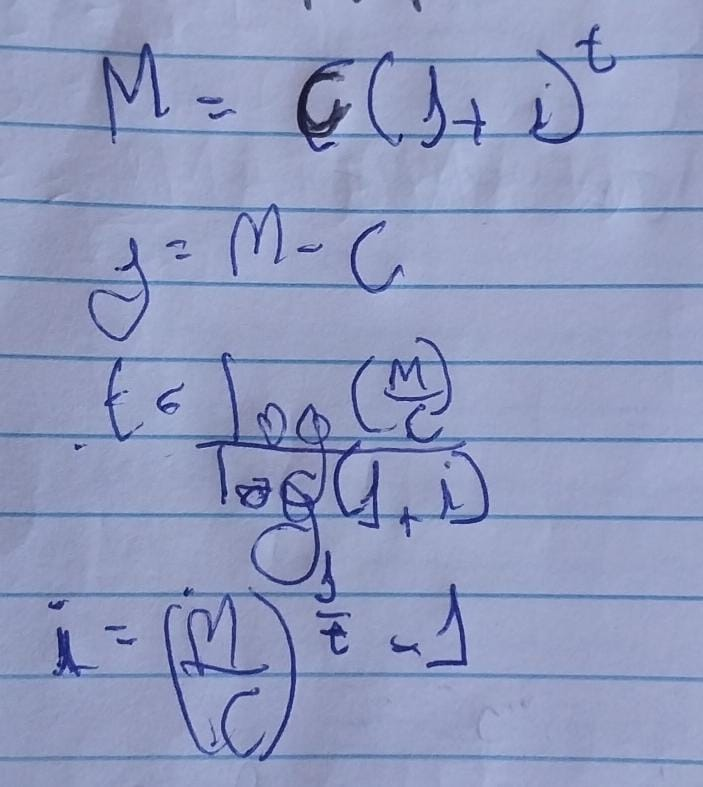

A Matemática Financeira estuda o valor do dinheiro ao longo do tempo e como ele é influenciado por fatores financeiros, como juros, taxas, aumentos e descontos. Ela é aplicada em situações cotidianas, como compras à vista com descontos ou parcelamentos com juros.
Algumas siglas e seus respectivos significados(Dicionario de matématica financeira):
O juros simples são o percentual cobrado em cima do valor inicial de uma operação financeira, como um empréstimo, financiamento ou investimento. O juro simples é calculado tendo como base o valor inicial, conhecido como capital, a taxa de juro e o tempo.
O juro simples é um tipo de juro comum no nosso dia a dia. Quando atrasamos o pagamento de uma conta, por exemplo, é bastante comum a cobrança de juro e multa, e essa cobrança é feita em cima do valor da dívida(C), ou seja, quanto maior o seu valor, maior será o juro. Sendo assim, o juro é um valor acrescentado sobre o capital ao longo do tempo.
Os juros compostos são comuns em relações comerciais, nas compras parceladas a longo prazo, nos investimentos, nos empréstimos e até mesmo no simples atraso do pagamento de contas. O juros pode ser um aliado ou um vilão dependendo do caso em que o juros for imposto.
Ao comparar o juros composto com o juros simples, precisamos entender que o juros simples é calculado sempre sobre o valor do exercício anterior, já o segundo é calculado sempre em cima do valor inicial. O juros composto terá maior crescimento com o passar do tempo, em comparação com o juros simples.
o termo anuidade refere-se a uma sequência de pagamentos(para um devedor) ou recebimentos(Recebedor) que ocorrem a intervalos regulares e iguais de tempo, sendo normalmente usada para calcular empréstimos, financiamentos, investimentos e outros cenários financeiros.
Tipos de anuidade:
Fonte: https://www.todamateria.com.br/matematica-financeira-conceitos-formulas/
Fonte: https://brasilescola.uol.com.br/matematica/juros-compostos.htm